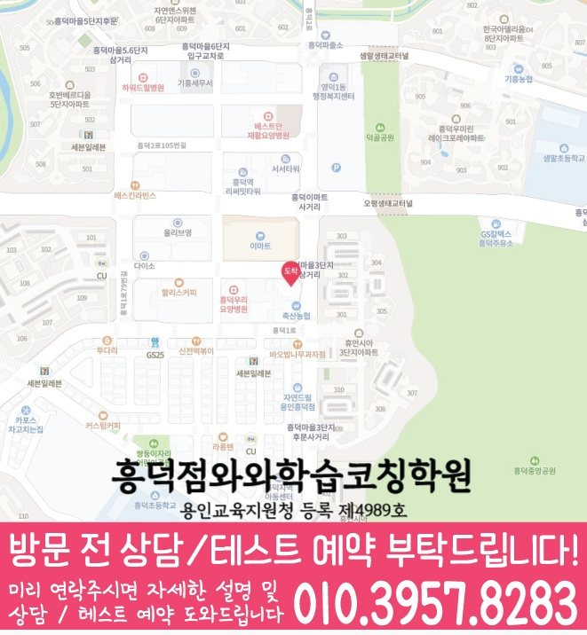

흥덕마을 초등 영수학원 수업 안내

지역 학원 안내
흥덕마을 초등 영어와 수학을 함께 알아볼 때는 흥덕점의 과목별 개설 학년을 따로 확인하세요. 학생이 두 과목에서 막힌 부분과 가능한 등원 요일을 나누어 정리하면 과목 선택을 상담하기 좋습니다.
영어·수학 학년 비교
개설 학년은 제공된 지점 자료 기준이며 현재 모집 여부를 뜻하지 않습니다. 모집 요일·시간표·학생 진도에 맞는 수업 가능 여부는 등록 전에 지점에 확인하세요.
영어와 수학에서 혼자 해결하지 못한 문제를 각각 준비하세요. 두 과목의 수강 조건과 가능한 요일을 따로 확인한 뒤 우선순위를 상담하세요.
매원초등학교 · 샘말초등학교 · 석현초등학교 · 흥덕초등학교
학교명은 제공된 타깃학교 자료의 참고 목록입니다. 학교별 전용반이나 현재 모집을 뜻하지 않으며, 진도·평가 범위는 학생이 가져온 최신 자료로 확인하세요.
안내 검토일

초등 영어는 읽거나 쓴 답의 근거, 수학은 첫 식과 계산 기록을 각각 준비하세요. 점수만 비교하지 않고 어느 단계에서 설명이 막혔는지 표시하면 우선 질문을 정하기 좋습니다.
경기 용인시 기흥구 흥덕2로 85 우연프라자 201호
와와학습코칭센터 흥덕점 위치는 (경기 용인시 기흥구 흥덕2로 85 우연프라자 201호)입니다. 용인 흥덕 이마트 뒷편 세차장 옆건물 2층입니다.(경기도 용인시 흥덕2로 85 우연프라자 201호)
학교 목록은 흥덕마을의 타깃학교 참고 자료이며 전용반이나 현재 모집을 뜻하지 않습니다.
센터 제공 교습비 링크 자료를 확인할 수 있습니다. 실제 개설 과목·횟수·금액은 상담 시 최종 확인해 주세요.
이 비교는 제공 자료의 기재 차이입니다. 미기재가 현재 수업 불가를 뜻하지 않으며, 기재된 학년도 현재 모집 여부와 학생별 수업 범위는 지점에 확인해야 합니다.
초등 영어·수학을 함께 문의할 때는 두 과목의 점검 결과를 별도로 설명받을 수 있는지 질문하세요. 합산 점수보다 과목별로 학생이 혼자 할 수 있는 활동과 도움이 필요한 활동을 구분합니다.
흥덕점 영어 개설 자료의 초등 기재 학년은 초1 · 초2 · 초3 · 초4 · 초5 · 초6입니다. 흥덕점 수학 개설 자료의 초등 기재 학년은 초1 · 초2 · 초3 · 초4 · 초5 · 초6입니다. 개설 자료와 현재 모집 시간표는 다를 수 있으므로 희망 요일과 시작 시점은 지점에 확인하세요.
영어는 읽거나 쓴 답안에서 근거를 설명하지 못한 부분, 수학은 첫 식과 계산 중 멈춘 부분을 따로 표시하세요. 두 과목의 최근 기록과 공부할 수 있는 시간을 비교해 먼저 확인할 과목과 다음 복습 날짜를 정하세요.
흥덕마을 타깃학교 참고 자료에 기재된 학교명은 매원초등학교 · 샘말초등학교 · 석현초등학교 · 흥덕초등학교입니다. 학교명은 상담 참고 목록입니다. 전용반·현재 모집·학교별 수업 가능 여부를 뜻하지 않습니다. 재학 학교의 최신 교재와 평가 안내로 진도와 범위를 확인하세요.
제공된 자료만으로 현재 모집 요일, 정원이나 학생 진도별 배정을 확정할 수 없습니다. 학생의 학교·학년·이수 과목과 희망 요일을 알려주고 수업 범위를 확인하세요.
주소는 경기 용인시 기흥구 흥덕2로 85 우연프라자 201호입니다. 페이지의 교습비 자료 링크에서 제공 문서를 확인하세요. 과목·횟수·기간과 추가 비용 여부를 구분해 상담 답변을 기록하고 방문 시간도 확인하세요.
상담 후에는 두 과목의 답변을 같은 항목으로 비교해 다음 복습 계획을 정하세요. 아래 항목은 비교 기준이며 실제 수업 방식은 지점에서 확인해야 합니다.
지역 학습 페이지
흥덕마을 안에서 학년별 영어·수학 관리 페이지를 깔끔하게 비교할 수 있도록 정리했습니다.
같은 지역에서 함께 확인하기